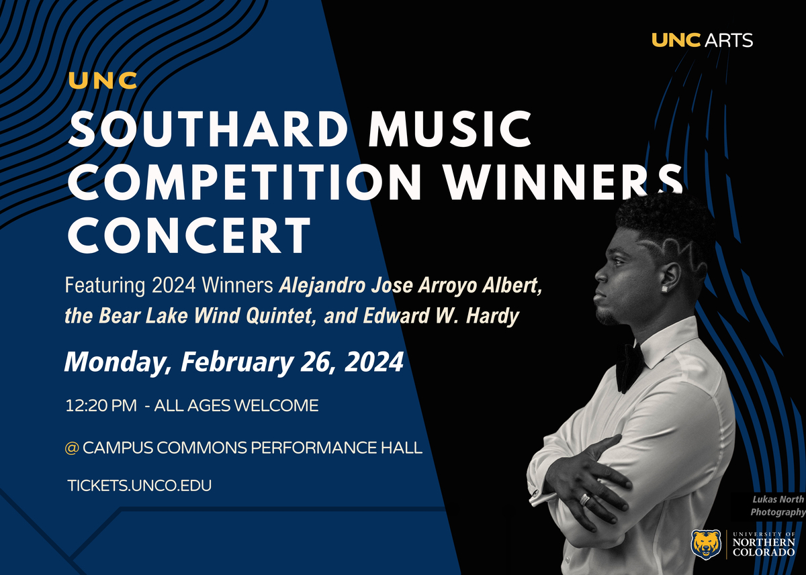
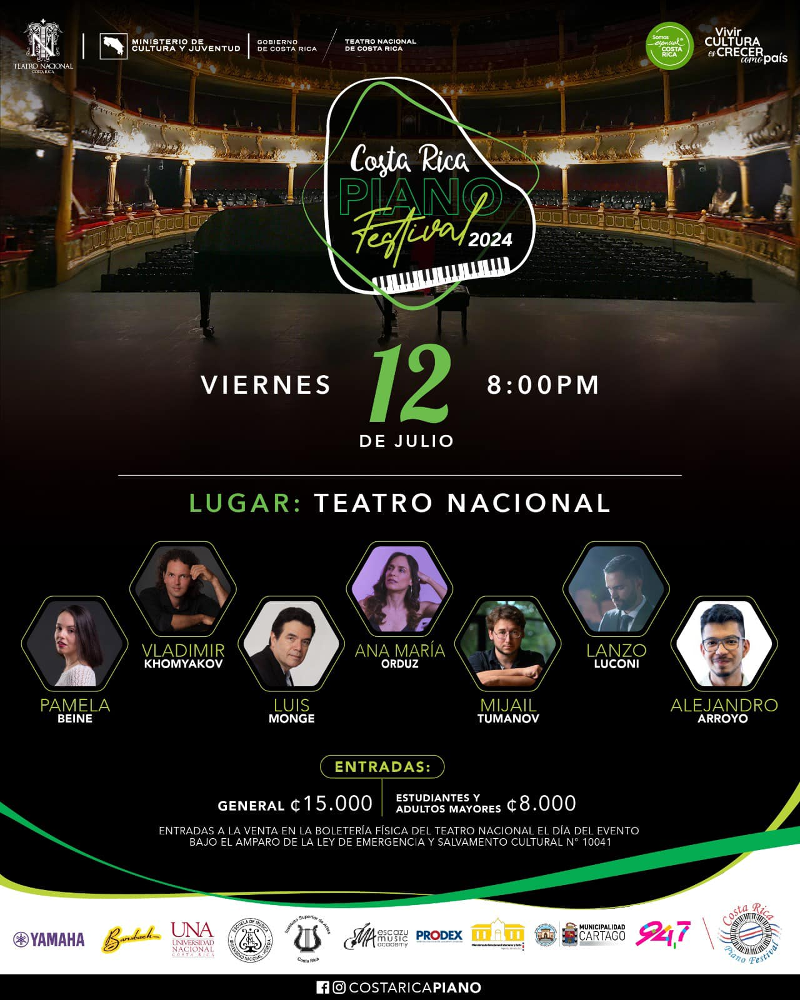

Conciertos y Eventos
Guest Artist Recital
Enero 22, 2024 — En colaboración con Seoul National University of Education. UNC Campus Commons Performance Hall

Ganadores Angie Southard Music Competition
Febrero 26, 2024 — UNC Campus Commons Performance Hall
Recital en Fundación Miguel Ángel Ramírez
Junio 2024 — Panchimalco, El Salvador

Costa Rica Piano Festival
Julio 12, 2024 — Artista Invitado al Concierto de Clausura. Teatro Nacional de Costa Rica
Colorado International Piano Academy & Festival
Julio 25 - Agosto 3, 2024 — Program Manager y Profesor Asistente. UNC Campus Commons & Milne Auditorium
Entropy & Offbeatness
Noviembre 11, 2024 — Proyecto Doctoral en Teoría Musical. UNC Skinner Music Library.
UNC Concerto Competition Winners Concert
Febrero 17, 2025 — Campus Commons Performance Hall, UNC
Masterclass con Dr. Andrew Staupe (University of Houston)
Abril 21, 2025 — UNC Rehearsal Hall

Recital Doctoral
Mayo 2025 — Obras de Manuel Matarrita, F. Liszt, N. Kapustin y A. Scriabin. Milne Auditorium, UNC

Conferencia-Recital: “Sonidos de Kushkatan: Nahualismo, nación e imaginarios indígenas”.
Junio 21, 2025 — Panchimalco, El Salvador